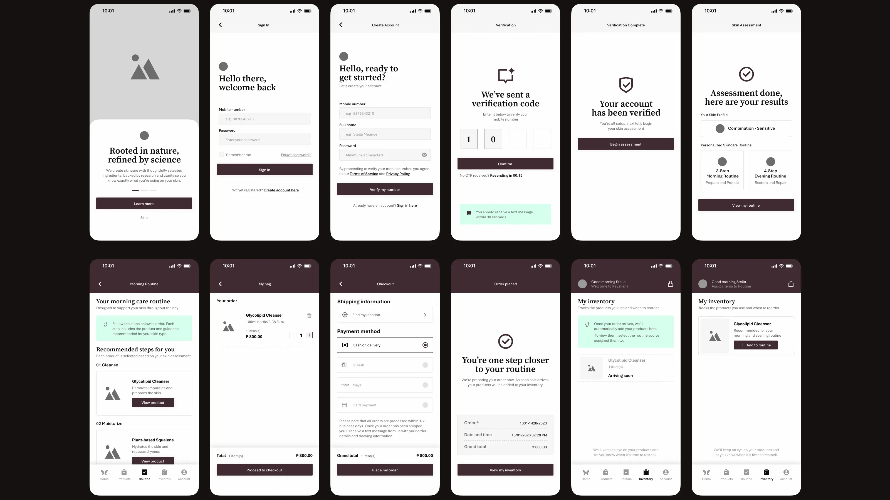
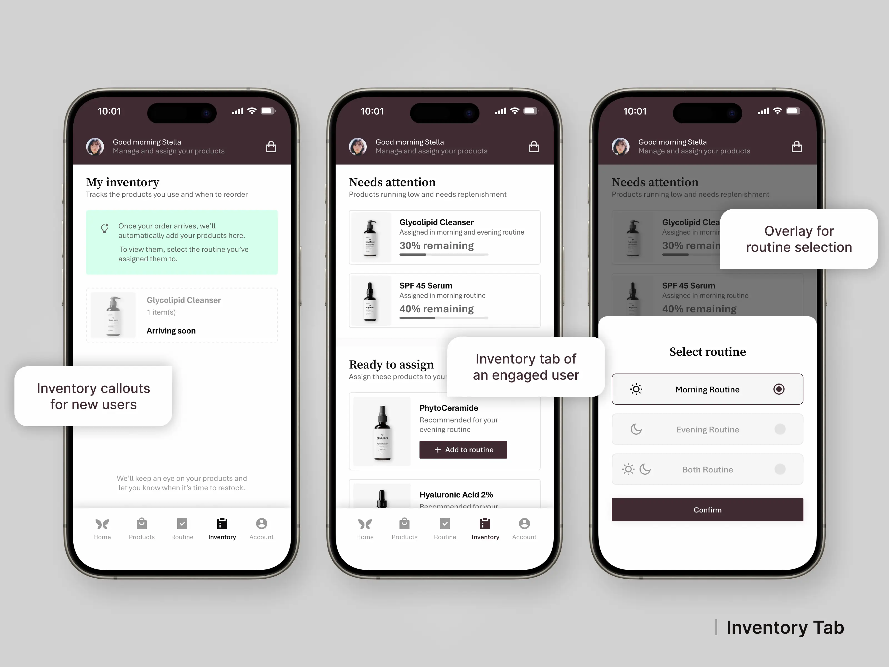
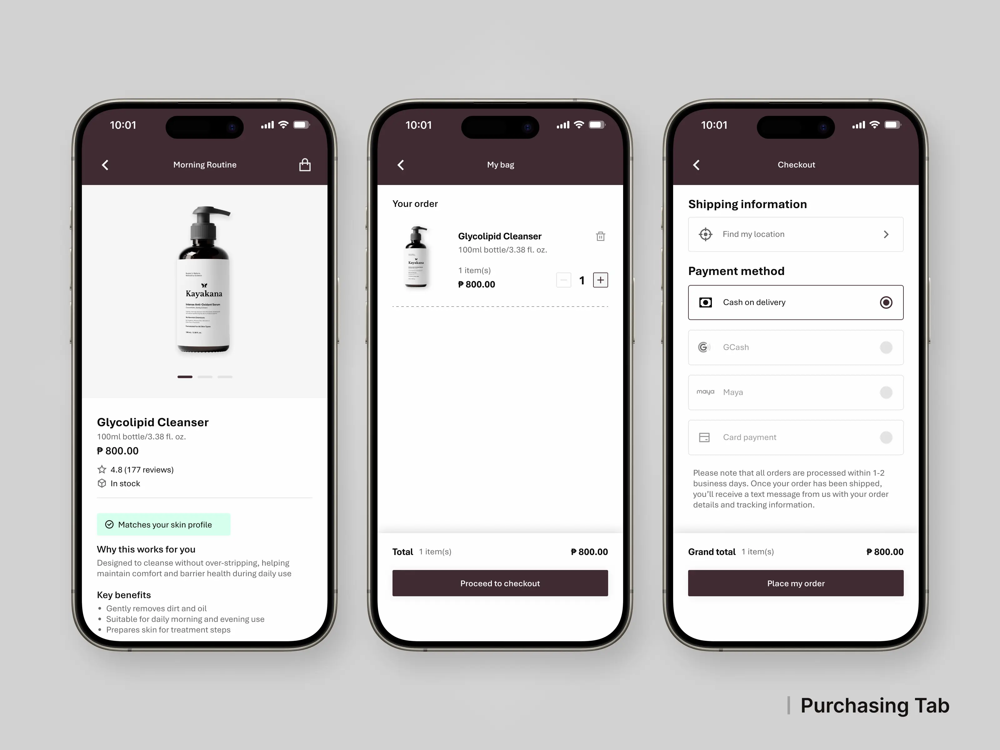

Concept Project
Mobile App UI/UX Design

01. Project Overview
Kayakana is a concept companion app for a fictional skincare
brand designed to help users build
and maintain a consistent skincare routine. Rather than functioning as a traditional e-commerce
platform, the app focuses on guiding users through skin
assessments, personalized product
recommendations, routine management and product usage tracking to encourage long-term skincare
habits.
Through a calm, minimal interface and a structured user journey, Kayakana aims to simplify
skincare for beginners while giving returning users an intuitive way to manage their daily
routines.
- Role: UI/UX Designer (Concept Project)
- Platform: iOS / Android Mobile App
- Scope: End-to-End Mobile App Design
- Tools: Figma, Photopea
02. Design Challenge
Many people begin a skincare routine with good intentions but struggle to understand their skin, build consistent habits and keep track of the products they use. While existing solutions often emphasize product sales or routine tracking, Kayakana was designed as a companion that guides users through every stage of their skincare journey, from assessment and recommendations to daily routines and inventory management.


As a concept project, designing Kayakana required making informed product decisions without access to real users or business requirements. I relied on established UX patterns, competitor research and system thinking to create a connected experience that felt realistic and scalable.
03. Research & Product Insights
Reviewed local and international skincare brands, including The Ordinary, Aesop and Oak Essentials, focusing on how they guide users in identifying skin types and recommending products. Many platforms rely on simple questionnaires and product suggestions, but lack features that support long-term routines and product usage, highlighting an opportunity to extend the experience beyond initial purchase.

These insights shaped Kayakana's product direction: guide before recommending, prioritize consistency over complexity and support users beyond their initial purchase.
04. Designing the Experience

Research findings were translated into a guided user journey that gradually builds confidence instead of overwhelming users with information. The experience begins with a skin assessment, transitions into personalized routine recommendations and continues through products, inventory tracking, and gentle reminders. Every screen was designed around a single principle: help users focus on one decision at a time, making skincare feel approachable, structured and easy to maintain.

05. Design System

The design system was built to support consistency across the entire product experience. By standardizing components, typography, colors and iconography, every screen feels familiar and easy to navigate, allowing the interface to reinforce guidance and clarity rather than compete for the user's attention.

06. The Final Experience
The final design brings together assessment, recommendations, routines and inventory into a single, connected experience. Rather than encouraging more purchases, Kayakana focuses on helping users build consistent skincare habits through a calm, supportive and easy-to-follow experience.




07. Reflection
This project reinforced the importance of designing with intention rather than adding features for the sake of complexity. Every decision was guided by a single goal: helping users feel more confident and consistent in their skincare journey while creating a product experience that remains simple, supportive and scalable.
Other Works

Freelance Project | UI/UX Redesign
Website Refresh: Modernized a corporate website to improve usability, navigation and client conversion
Explore Project
Personal Project | Web Design & Development
Designed and built a responsive portfolio from scratch that combines UI design with front-end implementation
Explore Project